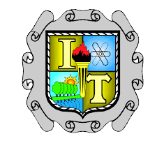

Instituto Tecnológico de Saltillo |
 | |
Tecnológico Nacional de México |
El edificio de mecatrónica es uno de los edificios ubicado en el
campus Boilot del Instituto Tecnológico de Saltillo
Cuenta con las instalaciones de algunos
de los laboratorios de circuitos y salones dedicados a la carrera de mecanica-mecatrónica
Cuenta con las
oficinas de coordinación de la carrera de mecatrónica así como 2 laboratorios en su planta baja
Cuenta con
una fachada roja con ventanales negros en la puerta principal, no cuenta con asientos en el interior